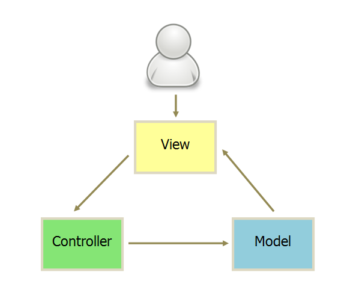

关注微信号【路飞】，干货马上就来！

前言
给大家整理了一下每个 case 一些还算不错的文章吧（还包括一些躺在我收藏夹里的好文章），大家可以自己看文章总结一下答案，这样也会理解更深刻。
并不是所有文章都需要看，希望是一个抛砖引玉的作用，大家也可以锻炼一下自己寻找有效资料的能力 ~
( 文章排序不分前后，随机排序 ~)
1.1 MVVM
介绍下MVVM和MVC有什么区别ViewModel有什么好处
MVC（Model-View-Controller）是最常见的软件架构之一，业界有着广泛应用。它本身很容易理解，但是要讲清楚，它与衍生的 MVP 和 MVVM 架构的区别就不容易了。
昨天晚上，我读了《Scaling Isomorphic Javascript Code》，突然意识到，它们的区别非常简单。我用几段话，就可以说清。
一、MVC
MVC模式的意思是，软件可以分成三个部分。
视图（View）：用户界面。
控制器（Controller）：业务逻辑
模型（Model）：数据保存
各部分之间的通信方式如下。
View 传送指令到 Controller
Controller 完成业务逻辑后，要求 Model 改变状态
Model 将新的数据发送到 View，用户得到反馈
所有通信都是单向的。

二、互动模式
接受用户指令时，MVC 可以分成两种方式。一种是通过 View 接受指令，传递给 Controller。

另一种是直接通过controller接受指令。
三、实例：Backbone
实际项目往往采用更灵活的方式，以 Backbone.js 为例
用户可以向 View 发送指令（DOM 事件），再由 View 直接要求 Model 改变状态。
用户也可以直接向 Controller 发送指令（改变 URL 触发 hashChange 事件），再由 Controller 发送给 View。
Controller 非常薄，只起到路由的作用，而 View 非常厚，业务逻辑都部署在 View。所以，Backbone 索性取消了 Controller，只保留一个 Router（路由器） 。
四、MVP
MVP 模式将 Controller 改名为 Presenter，同时改变了通信方向。

各部分之间的通信，都是双向的。
View 与 Model 不发生联系，都通过 Presenter 传递。
View 非常薄，不部署任何业务逻辑，称为”被动视图”（Passive View），即没有任何主动性，而 Presenter非常厚，所有逻辑都部署在那里。
五、MVVM
MVVM 模式将 Presenter 改名为 ViewModel，基本上与 MVP 模式完全一致。

唯一的区别是，它采用双向绑定（data-binding）：View的变动，自动反映在 ViewModel，反之亦然。Angular 和 Ember 都采用这种模式。1.2 生命周期
nextTick是如何实现的
官方文档说明：
用法：
先搬运下文档 (Vue-nextTick)[https://cn.vuejs.org/v2/api/#Vue-nextTick]
在下次 DOM 更新循环结束之后执行延迟回调。在修改数据之后立即使用这个方法，获取更新后的 DOM// 修改数据 vm.msg = 'Hello' // DOM 还没有更新 Vue.nextTick(function () { // DOM 更新了 })
// 作为一个 Promise 使用 (2.1.0 起新增，详见接下来的提示)
Vue.nextTick()
.then(function () {
// DOM 更新了
})
源码实现#
在了解原理之前先看下 nextTick 源码实现
```cpp
// The nextTick behavior leverages the microtask queue, which can be accessed
// via either native Promise.then or MutationObserver.
// MutationObserver has wider support, however it is seriously bugged in
// UIWebView in iOS >= 9.3.3 when triggered in touch event handlers. It
// completely stops working after triggering a few times... so, if native
// Promise is available, we will use it:
/* istanbul ignore next, $flow-disable-line */
if (typeof Promise !== 'undefined' && isNative(Promise)) {
const p = Promise.resolve()
timerFunc = () => {
p.then(flushCallbacks)
// In problematic UIWebViews, Promise.then doesn't completely break, but
// it can get stuck in a weird state where callbacks are pushed into the
// microtask queue but the queue isn't being flushed, until the browser
// needs to do some other work, e.g. handle a timer. Therefore we can
// "force" the microtask queue to be flushed by adding an empty timer.
if (isIOS) setTimeout(noop)
}
isUsingMicroTask = true
} else if (!isIE && typeof MutationObserver !== 'undefined' && (
isNative(MutationObserver) ||
// PhantomJS and iOS 7.x
MutationObserver.toString() === '[object MutationObserverConstructor]'
)) {
// Use MutationObserver where native Promise is not available,
// e.g. PhantomJS, iOS7, Android 4.4
// (#6466 MutationObserver is unreliable in IE11)
let counter = 1
const observer = new MutationObserver(flushCallbacks)
const textNode = document.createTextNode(String(counter))
observer.observe(textNode, {
characterData: true
})
timerFunc = () => {
counter = (counter + 1) % 2
textNode.data = String(counter)
}
isUsingMicroTask = true
} else if (typeof setImmediate !== 'undefined' && isNative(setImmediate)) {
// Fallback to setImmediate.
// Technically it leverages the (macro) task queue,
// but it is still a better choice than setTimeout.
timerFunc = () => {
setImmediate(flushCallbacks)
}
} else {
// Fallback to setTimeout.
timerFunc = () => {
setTimeout(flushCallbacks, 0)
}
}可以看到上面有几个条件判断 如果支持 Promise 就用 Promise
如果不支持就用 MutationObserver MDN-MutationObserver
MutationObserver 它会在指定的DOM发生变化时被调用
如果不支持 MutationObserver 的话就用 setImmediate MDN-setImmediate
但是这个特性只有最新版IE和node支持，然后是最后一个条件 如果这些都不支持的话就用setTimeout。
看完这一段其实也很懵，为什么要这样设计呢？为什么要这样一个顺序来判断呢？说到这里就不得不讨论JavaScript 运行机制（Event Loop）&微任务宏任务了。
JavaScript 运行机制（Event Loop）
单线程
JS是单线程，同一个时间只能做一件事。至于JS为什么是单线程？
JavaScript的单线程，与它的用途有关。作为浏览器脚本语言，JavaScript的主要用途是与用户互动，以及操作DOM。这决定了它只能是单线程，否则会带来很复杂的同步问题。比如，假定JavaScript同时有两个线程，一个线程在某个DOM节点上添加内容，另一个线程删除了这个节点，这时浏览器应该以哪个线程为准？所以，为了避免复杂性，从一诞生，JavaScript就是单线程，这已经成了这门语言的核心特征，将来也不会改变。
同步和异步
js里的任务分为两种：同步任务（synchronous）和异步任务（asynchronous）。同步阻塞异步非阻塞。
同步任务指的是，在主线程上排队执行的任务，只有前一个任务执行完毕，才能执行后一个任务，例如alert，会阻塞后续任务的执行，只有在点击确定之后，才会执行下一个任务。
异步任务指的是，不进入主线程、而进入”任务队列”（task queue）的任务，只有”任务队列”通知主线程，某个异步任务可以执行了，该任务才会进入主线程执行。
单线程就意味着，所有任务需要排队，前一个任务结束，才会执行后一个任务。所以会有任务队列的概念。正因为是单线程，所以所有任务都是主线程执行的，异步请求这些也不会开辟新的线程，而是放到任务队列，当这些异步操作被触发时才进入主线程执行。
宏任务和微任务
JS任务又分为宏任务和微任务。
宏任务（macrotask）：setTimeout、setInterval、setImmediate、I/O、UI rendering
微任务（microtask）：promise.then、process.nextTick、MutationObserver、queneMicrotask(开启一个微任务)
宏任务按顺序执行，且浏览器在每个宏任务之间渲染页面
浏览器为了能够使得JS内部task与DOM任务能够有序的执行，会在一个task执行结束后，在下一个 task 执行开始前，对页面进行重新渲染 （task->渲染->task->…）
微任务通常来说就是需要在当前 task 执行结束后立即执行的任务，比如对一系列动作做出反馈，或或者是需要异步的执行任务而又不需要分配一个新的 task，这样便可以减小一点性能的开销。只要执行栈中没有其他的js代码正在执行且每个宏任务执行完，微任务队列会立即执行。如果在微任务执行期间微任务队列加入了新的微任务，会将新的微任务加入队列尾部，之后也会被执行。
何时使用微任务
微任务的执行时机，晚于当前本轮事件循环的 Call Stack(调用栈)中的代码（宏任务），遭遇事件处理函数和定时器的回调函数
使用微任务的原因
减少操作中用户可感知到的延迟
确保任务顺序的一致性，即便当结果或数据是同步可用的
批量操作的优化
了解了宏任务和微任务的执行顺序，就可以了解到为何nextTick 要优先使用Promise和MutationObserver 因为他俩属于微任务，会在执行栈空闲的时候立即执行，它的响应速度相比setTimeout会更快，因为无需等渲染。
而setImmediate和setTimeout属于宏任务，执行开始之前要等渲染，即task->渲染->task。
1.3 数据绑定
Vue的双向绑定是如何实现的
先看效果图
//代码：
<div id="app">
<input v-model="name" type="text">
<h1>{{name}}</h1>
</div>
<script src="./js/observer.js"></script>
<script src="./js/watcher.js"></script>
<script src="./js/compile.js"></script>
<script src="./js/index.js"></script>
<script>
const vm = new Mvue({
el: "#app",
data: {
name: "我是摩登"
}
});
</script>数据绑定
在正式开始之前我们先来说说数据绑定的事情，数据绑定我的理解就是让数据M（model）展示到 视图V（view）上。我们常见的架构模式有 MVC、MVP、MVVM模式，目前前端框架基本上都是采用 MVVM 模式实现双向绑定，Vue 自然也不例外。但是各个框架实现双向绑定的方法略有所不同，目前大概有三种实现方式。
- 发布订阅模式
- Angular 的脏查机制
- 数据劫持
而 Vue 则采用的是数据劫持与发布订阅相结合的方式实现双向绑定，数据劫持主要通过 Object.defineProperty 来实现。
Object.defineProperty
这篇文章我们不详细讨论 Object.defineProperty 的用法，我们主要看看它的存储属性 get 与 set。我们来看看通过它设置的对象属性之后有何变化。
var people = {
name: "Modeng",
age: 18
}
people.age; //18
people.age = 20;上述代码就是普通的获取/设置对象的属性，看不到什么奇怪的变化。
var modeng = {}
var age;
Object.defineProperty(modeng, 'age', {
get: function () {
console.log("获取年龄");
return age;
},
set: function (newVal) {
console.log("设置年龄");
age = newVal;
}
});
modeng.age = 18;
console.log(modeng.age);你会发现通过上述操作之后，我们访问 age 属性时会自动执行 get 函数，设置 age 属性时，会自动执行 set 函数，这就给我们的双向绑定提供了非常大的方便。
分析
我们知道 MVVM 模式在于数据与视图的保持同步，意思是说数据改变时会自动更新视图，视图发生变化时会更新数据。
所以我们需要做的就是如何检测到数据的变化然后通知我们去更新视图，如何检测到视图的变化然后去更新数据。检测视图这个比较简单，无非就是我们利用事件的监听即可。
那么如何才能知道数据属性发生变化呢？这个就是利用我们上面说到的 Object.defineProperty 当我们的属性发生变化时，它会自动触发 set 函数从而能够通知我们去更新视图。
实现
通过上面的描述与分析我们知道 Vue 是通过数据劫持结合发布订阅模式来实现双向绑定的。我们也知道数据劫持是通过 Object.defineProperty 方法，当我们知道这些之后，我们就需要一个监听器 Observer 来监听属性的变化。得知属性发生变化之后我们需要一个 Watcher 订阅者来更新视图，我们还需要一个 compile 指令解析器，用于解析我们的节点元素的指令与初始化视图。所以我们需要如下：
- bserver 监听器：用来监听属性的变化通知订阅者
- Watcher 订阅者：收到属性的变化，然后更新视图
- Compile 解析器：解析指令，初始化模版，绑定订阅者
顺着这条思路我们一步一步去实现。监听器 Observer
监听器的作用就是去监听数据的每一个属性，我们上面也说了使用 Object.defineProperty 方法，当我们监听到属性发生变化之后我们需要通知 Watcher 订阅者执行更新函数去更新视图，在这个过程中我们可能会有很多个订阅者 Watcher 所以我们要创建一个容器 Dep 去做一个统一的管理。function defineReactive(data, key, value) { //递归调用，监听所有属性 observer(value); var dep = new Dep(); Object.defineProperty(data, key, { get: function () { if (Dep.target) { dep.addSub(Dep.target); } return value; }, set: function (newVal) { if (value !== newVal) { value = newVal; dep.notify(); //通知订阅器 } } }); }
function observer(data) {
if (!data || typeof data !== “object”) {
return;
}
Object.keys(data).forEach(key => {
defineReactive(data, key, data[key]);
});
}
function Dep() {
this.subs = [];
}
Dep.prototype.addSub = function (sub) {
this.subs.push(sub);
}
Dep.prototype.notify = function () {
console.log(‘属性变化通知 Watcher 执行更新视图函数’);
this.subs.forEach(sub => {
sub.update();
})
}
Dep.target = null;
以上我们就创建了一个监听器 Observer，我们现在可以尝试一下给一个对象添加监听然后改变属性会有何变化。
```cpp
var modeng = {
age: 18
}
observer(modeng);
modeng.age = 20;我们可以看到浏览器控制台打印出 “属性变化通知 Watcher 执行更新视图函数” 说明我们实现的监听器没毛病，既然监听器有了，我们就可以通知属性变化了，那肯定是需要 Watcher 的时候了。
订阅者 Watcher
Watcher 主要是接受属性变化的通知，然后去执行更新函数去更新视图，所以我们做的主要是有两步：
1.把 Watcher 添加到 Dep 容器中，这里我们用到了 监听器的 get 函数
2.接收到通知，执行更新函数。
function Watcher(vm, prop, callback) {
this.vm = vm;
this.prop = prop;
this.callback = callback;
this.value = this.get();
}
Watcher.prototype = {
update: function () {
const value = this.vm.$data[this.prop];
const oldVal = this.value;
if (value !== oldVal) {
this.value = value;
this.callback(value);
}
},
get: function () {
Dep.target = this; //储存订阅器
const value = this.vm.$data[this.prop]; //因为属性被监听，这一步会执行监听器里的 get方法
Dep.target = null;
return value;
}
}这一步我们把 Watcher 也给弄了出来，到这一步我们已经实现了一个简单的双向绑定了，我们可以尝试把两者结合起来看下效果。
function Mvue(options, prop) {
this.$options = options;
this.$data = options.data;
this.$prop = prop;
this.$el = document.querySelector(options.el);
this.init();
}
Mvue.prototype.init = function () {
observer(this.$data);
this.$el.textContent = this.$data[this.$prop];
new Watcher(this, this.$prop, value => {
this.$el.textContent = value;
});
}这里我们尝试利用一个实例来把数据与需要监听的属性传递进来，通过监听器监听数据，然后添加属性订阅，绑定更新函数。
<div id="app">{{name}}</div>
const vm = new Mvue({
el: "#app",
data: {
name: "我是摩登"
}
}, "name");我们可以看到数据已经正常的显示在页面上，那么我们在通过控制台去修改数据，发生变化后视图也会跟着修改。
到这一步我们我们基本上已经实现了一个简单的双向绑定，但是不难发现我们这里的属性都是写死的，也没有指令模板的解析，所以下一步我们来实现一个模板解析器。
Compile 解析器
Compile 的主要作用一个是用来解析指令初始化模板，一个是用来添加添加订阅者，绑定更新函数。
因为在解析 DOM 节点的过程中我们会频繁的操作 DOM， 所以我们利用文档片段（DocumentFragment）来帮助我们去解析 DOM 优化性能。
function Compile(vm) {
this.vm = vm;
this.el = vm.$el;
this.fragment = null;
this.init();
}
Compile.prototype = {
init: function () {
this.fragment = this.nodeFragment(this.el);
},
nodeFragment: function (el) {
const fragment = document.createDocumentFragment();
let child = el.firstChild;
//将子节点，全部移动文档片段里
while (child) {
fragment.appendChild(child);
child = el.firstChild;
}
return fragment;
}
}然后我们就需要对整个节点和指令进行处理编译，根据不同的节点去调用不同的渲染函数，绑定更新函数，编译完成之后，再把 DOM 片段添加到页面中。
Compile.prototype = {
compileNode: function (fragment) {
let childNodes = fragment.childNodes;
[...childNodes].forEach(node => {
let reg = /\{\{(.*)\}\}/;
let text = node.textContent;
if (this.isElementNode(node)) {
this.compile(node); //渲染指令模板
} else if (this.isTextNode(node) && reg.test(text)) {
let prop = RegExp.$1;
this.compileText(node, prop); //渲染{{}} 模板
}
//递归编译子节点
if (node.childNodes && node.childNodes.length) {
this.compileNode(node);
}
});
},
compile: function (node) {
let nodeAttrs = node.attributes;
[...nodeAttrs].forEach(attr => {
let name = attr.name;
if (this.isDirective(name)) {
let value = attr.value;
if (name === "v-model") {
this.compileModel(node, value);
}
node.removeAttribute(name);
}
});
},
//省略。。。
}因为代码比较长如果全部贴出来会影响阅读，我们主要是讲整个过程实现的思路，文章结束我会把源码发出来，有兴趣的可以去查看全部代码。
到这里我们的整个的模板编译也已经完成，不过这里我们并没有实现过多的指令，我们只是简单的实现了 v-model 指令，本意是通过这篇文章让大家熟悉与认识 Vue 的双向绑定原理，并不是去创造一个新的 MVVM 实例。所以并没有考虑很多细节与设计。
现在我们实现了 Observer、Watcher、Compile，接下来就是把三者给组织起来，成为一个完整的 MVVM。
创建 Mvue
这里我们创建一个 Mvue 的类（构造函数）用来承载 Observer、Watcher、Compile 三者。
function Mvue(options) {
this.$options = options;
this.$data = options.data;
this.$el = document.querySelector(options.el);
this.init();
}
Mvue.prototype.init = function () {
observer(this.$data);
new Compile(this);
}然后我们就去测试一下结果，看看我们实现的 Mvue 是不是真的可以运行。
<div id="app">
<h1>{{name}}</h1>
</div>
<script src="./js/observer.js"></script>
<script src="./js/watcher.js"></script>
<script src="./js/compile.js"></script>
<script src="./js/index.js"></script>
<script>
const vm = new Mvue({
el: "#app",
data: {
name: "完全没问题，看起来是不是很酷！"
}
});
</script>我们尝试去修改数据，也完全没问题，但是有个问题就是我们修改数据时时通过 vm.$data.name 去修改数据，而不是想 Vue 中直接用 vm.name 就可以去修改，那这个是怎么做到的呢？其实很简单，Vue 做了一步数据代理操作。
数据代理
我们来改造下 Mvue 添加数据代理功能，我们也是利用 Object.defineProperty 方法进行一步中间的转换操作，间接的去访问。
function Mvue(options) {
this.$options = options;
this.$data = options.data;
this.$el = document.querySelector(options.el);
//数据代理
Object.keys(this.$data).forEach(key => {
this.proxyData(key);
});
this.init();
}
Mvue.prototype.init = function () {
observer(this.$data);
new Compile(this);
}
Mvue.prototype.proxyData = function (key) {
Object.defineProperty(this, key, {
get: function () {
return this.$data[key]
},
set: function (value) {
this.$data[key] = value;
}
});
}
到这里我们就可以像 Vue 一样去修改我们的属性了，非常完美。完全自己动手实现，你也来试试把，体验下自己动手写代码的乐趣。
defineProperty和proxy有什么区别
两者经常被用作数据劫持。
数据劫持：在访问或者修改对象某个属性时，通过一个代码的拦截行为，进行额外的操作或修改返回结果。数据劫持应用在数据双向绑定。
Vue2.x利用Object.defineProperty()，并将内部解耦为Observer、Dep，并使用watcher相连
Vue3.x版本后使用proxy进行
另外一种应用是在immer.js，保证数据的immutable属性，使用proxy来阻断常规的修改操作
应用：
1、Object.defineProperty()
Object.defineProperty的问题有三个：
- 不能监听数组的变化（数组的这些方法不能触发set:push、pop、shift、unshift、splice、sort、reverse）。Vue对其变异方法进行重写。
- 必须遍历对象的每个属性（Object.defineProperty多数要配合Object.keys使用）
Object.keys(obj).forEach(key => { Object.defineProperty(obj, key, { ... })}) - 必须深层遍历嵌套的对象（当一个对象为深层嵌套时，必须逐层遍历，直到把每个对象都调用到Object.defineProperty为止 ）Vue源码中这样的逻辑-walk方法
2、Proxy
- 支持数组：不需要对数组方法进行重载，省去了众多hack
let arr = [1,2,3] let proxy = new Proxy(arr, { get(target, key, receiver) { console.log('get', key) return Reflect.get(target, key, receiver) }, set(target, key, value, receiver){ console.log('set', key, value) return Reflect.get(target, key, value, receiver) }}) proxy.push(4) //打印内容 VM1087:4 get push VM1087:4 get length VM1087:8 set 3 4 VM1087:8 set length 4 4 - 针对对象：针对整个对象，而不是对象的某个属性 （省略了Object.keys()的遍历。Reflect是一个内置对象，提供拦截js的方法。这些方法与处理器对象方法相同。Reflect不是函数对象，因此它是不可构造的。Reflect.get() Reflect.set()）
- 嵌套支持：get里面递归调用proxy并返回
其它方面let obj = { a:[1, 2, 3], b:1 } let handler = { get(target, key, receiver) { console.log('get', key) if(typeof target[key] === 'object' && target[key] !== null) return new Proxy(target[key], handler) return Reflect.get(target, key, receiver) }, set(target, key, value, receiver) { console.log('set', value) return Reflect.set(target, key, value, receiver) }} let proxy = new Proxy(obj, handler) proxy.b = 8 proxy.a.push(4)
优势:Proxy 的第二个参数可以有 13 种拦截方法，比 Object.defineProperty() 要更加丰富,Proxy 作为新标准受到浏览器厂商的重点关注和性能优化，相比之下 Object.defineProperty() 是一个已有的老方法。
劣势:Proxy 的兼容性不如 Object.defineProperty() (caniuse 的数据表明，QQ 浏览器和百度浏览器并不支持 Proxy，这对国内移动开发来说估计无法接受，但两者都支持 Object.defineProperty()),不能使用 polyfill 来处理兼容性Vue中的数据为什么频繁变化但只会更新一次
考虑以下场景：export default { data () { return { number: 0 }; }, mounted () { var i = 0; for(var i = 0; i < 1000; i++) { this.number++; } } }当我们在一个同步任务中执行1000次number++操作，按照set -> 订阅器(dep) -> 订阅者(watcher) -> update的过程，dom应该会频繁更新，按理说这会很消耗性能，但实际上这个过程中dom只会更新一次。
这是因为vue的dom更新是一个异步操作，在数据更新后会首先被set钩子监听到，但是不会马上执行dom更新，而是在下一轮循环中执行更新。
具体实现是vue中实现了一个queue队列用于存放本次事件循环中的所有watcher更新，并且同一个watcher的更新只会被推入队列一次，并在本轮事件循环的微任务执行结束后执行此更新(UI Render阶段)，这就是dom只会更新一次的原因。
1.4 状态管理
什么是状态管理，为什么需要状态管理
状态管理是什么
近年来，随着单页面应用的兴起，JavaScript 需要管理比任何时候都要多的状态，或者可以说是数据，这些状态可能包括服务器响应、缓存数据、本地生成尚未持久化到服务器的数据，也包括 UI 状态，如激活的路由，被选中的标签，是否显示加载动效或者分页器等等，这些都是十年前二十年前的 web 开发没有遇到的挑战。
但是其实，无论系统如何复杂，前端页面的所要完成的事其实很简单，就是把业务的信息渲染出来，反馈给用户，并进行人机交互，返回给服务端，这是前端技术解决的核心问题。而几乎所有的 web 系统都不会把用户的一些数据和系统的状态维护在客户端，例如不会把用户的会员等级，新增的待办事项仅仅保存在浏览器，因为这些都是“转瞬即逝”的东西，用户换一个浏览器这些信息就会全部消失不见，所以这些数据（状态）必然会在服务器上存储起来，当用户重新登录的时候，页面会从服务器中重新拿到最新的数据，把页面渲染出来。
自从 Ajax 的诞生，使得 Web 应用不用大量和频繁跟服务器通信，原本需要服务器返回整个页面的数据，现在也只需要通过 Ajax 传递少量的信息，剩下的东西由 javascript 自己操作页面，对页面的元素修修改改。因为不用刷新整个页面，这种 Ajax 应用用户体验非常好，给人非常快的感觉，而 Javascript 对页面上的操作的总总过程，其实就是页面 UI 跟 Javascript 变量的同步，也涉及跟服务端数据的同步，也就是我们所说的状态管理。
为什么需要状态管理
在如今的前端开发领域，状态管理可能是最容易被误解的技术之一，也是滥用比较多的一门技术，很多开发者一上来就使用脚手架构建一套 Vue 全家桶，或者是 React Redux/Mobx 全家桶，然后在一些简单的展示页面上也使用 Redux 之类的状态管理库，事实上是这并不是最佳实践。
广义状态管理
状态管理是一个十分广泛的概念，因为状态无处不在。服务端也有状态，Spring 等框架会管理状态，RDS 和 redis 等组件会保存数据，手机 App 也会把数据保存到手机内存里，状态管理不是什么新鲜事物，在 web 前端还没有变复杂之前，很多系统的网页用着纯 Javascript 或者 jQuery 来做一些状态管理，或者说是一些数据管理吧，当然，这里边要做的事情其实很复杂
状态管理的好处及带来的问题
最后，总结性地回到一下为什么要做状态管理
状态管理有以下的好处
- 能有效分离 UI 层和数据处理层
- 帮助前端应用结构化数据
- 有效控制状态的变化
- 处理同步与异步
- 实现一些日志打印，热加载，时间旅行，同构应用等功能
- …
当然，状态管理也有缺点，其实就一点，就是代码会变得更复杂，当然，这一点并不完全是缺点，当一个应用业务用例和代码量不断上升的时候，代码不可能维持简单简洁，如果没有一个的好架构的约束，那么只会演变成大泥潭，但设计出一个好的状态管理方案，那么就可以把复杂度控制在一个合理的范围内，保持架构的整洁。介绍一下Vuex和Redux
Flux 的组成
- View: 视图层。
- Action: 动作，即数据改变的消息对象（可通过事件触发、测试用例触发等）。
- Store 的改变只能通过 Action。
- 具体 Action 的处理逻辑一般放在 Store 里。
- Action 对象包含 type （类型）与 payload （传递参数）。
- Dispatcher: 派发器，接收 Actions ，发给所有的 Store。
- Store: 数据层，存放应用状态与更新状态的方法，一旦发生变动，就提醒 Views 更新页面。
Notice: - Action 仅仅是改变 Store 的一个动作，一般包含该动作的类型、传递的数据。Flux 的特点
- 单向数据流。视图事件或者外部测试用例发出 Action ，经由 Dispatcher 派发给
- Store ，Store 会触发相应的方法更新数据、更新视图。
- Store 可以有多个。
- Store 不仅存放数据，还封装了处理数据的方法。
Redux的组成
- Store: 存储应用 state 以及用于触发 state 更新的 dispatch 方法等，整个应用仅有单一的 Store 。Store 中提供了几个 API :
- store.getState(): 获取当前 state。
- store.dispatch(action): 用于 View 发出 Action。
- store.subscribe(listener): 设置监听函数，一旦 state 变化则执行该函数（若把视图更新函数作为 listener 传入，则可触发视图自动渲染）。
- Action: 同 Flux ，Action 是用于更新 state 的消息对象，由 View 发出。
- 有专门生成 Action 的 Action Creator
- Reducer: 是一个用于改变 state 的纯函数（对于相同的参数返回相同的返回结果，不修改参数，不依赖外部变量），即通过应用状态与 Action 推导出新的 state : (previousState, action) => newState。Reducer 返回一个新的 state 。
Redux 的特点
- 单向数据流。View 发出 Action (store.dispatch(action))，Store 调用 Reducer 计算出新的 state ，若 state 产生变化，则调用监听函数重新渲染 View （store.subscribe(render)）。
- 单一数据源，只有一个 Store。
- state 是只读的，每次状态更新之后只能返回一个新的 state。
- 没有 Dispatcher ，而是在 Store 中集成了 dispatch 方法，store.dispatch() 是 View 发出 Action 的唯一途径。
Middleware
Middleware 即中间件，在 Redux 中应用于异步数据流。
Redux 的 Middleware 是对 store.dispatch() 进行了封装之后的方法，可以使 dispatch 传递 action 以外的函数或者 promise ；通过 applyMiddleware 方法应用中间件。（middleware 链中的最后一个 middleware 开始 dispatch action 时，这个 action 必须是一个普通对象）
常用库: redux-actions, redux-thunk, redux-promise 。
const store = createStore(
reducer,
// 依次执行
applyMiddleware(thunk, promise, logger)
)Vuex
Vuex 是 vue.js 的状态管理模式。
Vuex 的核心概念
- Store: Vuex 采用单一状态树，每个应用仅有一个 Store 实例，在该实例下包含了 state, actions, mutations, getters, modules 。
- State: Vuex 为单一数据源。
- 可以通过 mapState 辅助函数将 state 作为计算属性访问，或者将通过 Store 将 state 注入全局之后使用 this.$store.state 访问。
- State 更新视图是通过 vue 的双向绑定机制实现的。
- Getter: Getter 的作用与 filters 有一些相似，可以将 State 进行过滤后输出。
- Mutation: Mutaion 是 vuex 中改变 State 的唯一途径（严格模式下），并且只能是同步操作。Vuex 中通过 store.commit() 调用 Mutation 。
- Action: 一些对 State 的异步操作可以放在 Action 中，并通过在 Action 提交 Mutaion 变更状态。
- Action 通过 store.dispatch() 方法触发。
- 可以通过 mapActions 辅助函数将 vue 组件的 methods 映射成 store.dispatch 调用（需要先在根节点注入 store）。
- Module: 当 Store 对象过于庞大时，可根据具体的业务需求分为多个 Module ，每个 Module 都具有自己的 state 、mutation 、action 、getter。
Vuex 的特点：
- 单向数据流。View 通过 store.dispatch() 调用 Action ，在 Action 执行完异步操作之后通过 store.commit() 调用 Mutation 更新 State ，通过 vue 的响应式机制进行视图更新。
- 单一数据源，和 Redux 一样全局只有一个 Store 实例。
- 可直接对 State 进行修改。
MobX
MobX 背后的哲学是:任何源自应用状态的东西都应该自动地获得。
意思就是，当状态改变时，所有应用到状态的地方都会自动更新。MobX 的核心概念
- State: 驱动应用的数据。
- Computed values: 计算值。如果你想创建一个基于当前状态的值时，请使用 computed。
- Reactions: 反应，当状态改变时自动发生。
- Actions: 动作，用于改变 State 。
依赖收集（autoRun）: MobX 中的数据以来基于观察者模式，通过 autoRun 方法添加观察者。
举个栗子：const obj = observable({ a: 1, b: 2 })
autoRun(() => {
console.log(obj.a)
})
obj.b = 3 // 什么都没有发生
obj.a = 2 // observe 函数的回调触发了，控制台输出：2
### MobX 的特点
- 数据流流动不自然，只有用到的数据才会引发绑定，局部精确更新（细粒度控制）。
- 没有时间回溯能力，因为数据只有一份引用。
- 基于面向对象。
- 往往是多个 Store。
- 代码侵入性小。
- 简单可扩展。
- 大型项目使用 MobX 会使得代码难以维护。
### 总结
- Flux 、Redux 、Vuex 均为单向数据流。
- Redux 和 Vuex 是基于 Flux 的，Redux 较为泛用，Vuex 只能用于 vue。
- Flux 与 MobX 可以有多个 Store ，Redux 、Vuex 全局仅有一个 Store（单状态树）。
- Redux 、Vuex 适用于大型项目的状态管理，MobX 在大型项目中应用会使代码可维护性变差。
Redux 中引入了中间件，主要解决异步带来的副作用，可通过约定完成许多复杂工作。
- MobX 是状态管理库中代码侵入性最小的之一，具有细粒度控制、简单可扩展等优势，- 但是没有时间回溯能力，一般适合应用于中小型项目中。
## Vuex和Redux有什么区别
由于Vuex和Redux都是从Flux中衍生出来，同时Vuex对Redux部分思想也有一些借鉴，所以Vuex和Redux有很多相同点。很多资料也有介绍两者的对比，但大部分讲解的比较抽象，较难理解。笔者整理两者异同点，同时配有标准案例进行说明。注意本文不是科普vuex和redux相关概念，相关知识内容可以在官方文档中查看。(Vuex)[https://vuex.vuejs.org/zh/guide/] 、(Redux)[https://redux.js.org/introduction/getting-started]
### 异同点
- #### 相同点
- state 共享数据
- 流程一致：定义全局state，触发，修改state
- 原理相似，通过全局注入store。
- ##### 不同点
- 从实现原理上来说：
- Redux 使用的是不可变数据，而Vuex的数据是可变的。Redux每次都是用新的state替换旧的state，而Vuex是直接修改
- Redux 在检测数据变化的时候，是通过 diff 的方式比较差异的，而Vuex其实和Vue的原理一样，是通过 getter/setter来比较的
- 从表现层来说：
- vuex定义了state、getter、mutation、action四个对象；redux定义了state、reducer、action。
- vuex中state统一存放，方便理解；reduxstate依赖所有reducer的初始值
- vuex有getter,目的是快捷得到state；redux没有这层，react-redux mapStateToProps参数做了这个工作。
- vuex中mutation只是单纯赋值(很浅的一层)；redux中reducer只是单纯设置新state(很浅的一层)。他俩作用类似，但书写方式不同
- vuex中action有较为复杂的异步ajax请求；redux中action中可简单可复杂,简单就直接发送数据对象（{type:xxx, your-data}）,复杂需要调用异步ajax（依赖redux-thunk插件）。
- vuex触发方式有两种commit同步和dispatch异步；redux同步和异步都使用dispatch
### 详细解释
- #### Vuex
- 类型
- state: 共享数据
- getter: 快捷state
- mutation: 同步更新，只是简单都赋值
- action: 异步更新，可以调用commit来触发同步mutation
- 触发
- commit 触发mutation同步操作
- dispatch 触发action异步操作
- 库结合（自带）
- mapState
- mapGetters
- mapMutations
- mapActions
- 其他
- UI跟state、action/dispatch相关
- mutations 同步修改state。UI触发使用commit指令
- action 内可以commit同步state或dispatch异步另外一个action。UI触发使用dispatch指令
- #### Redux
- 类型
- store: 合并所有reducer，共享数据
- reducer: 两个作用：1. 初始值合并获得state 2. 简单的赋值，获取新的state代替老的state
- action: 触发函数。是唯一可以带上数据修改state的触发对象。接下逻辑就转移到reducer中
> 注：也可以反过来理解：Vuex的每一次this.$store.commit('type', data) === action(data){ return { type, data}}）
- 触发 (依赖react-redux)
- dispatch触发同步或异步。使用mapDispatchToProps参数
- 库结合（依赖react-redux）
- mapStateToProps
- mapDispatchToProps
> 简单理解，reducer承担了state和mutations功能。 Vuex中commit-mutations是唯一修改state的方式；Redux中dispatch-reducer是唯一修改state方式
### Vuex典型案例
```cpp
// vuex非常简单易懂，而且整理到1个文件即可
const state: IState = {
login: false,
option: {
_id: '',
sub_title: '',
title: '',
keyword: '',
descript: '',
url: '',
email: '',
icp: ''
}
}
const actions: ActionTree<IState, any> = {
// 登录
async login ({ commit }, user: StoreState.Login): Promise<Ajax.AjaxResponse> {
commit('USER_LOGINING')
const res: Ajax.AjaxResponse = await service.login({ ...user })
commit('USER_LOGINING_FINAL')
return res
},
}
const mutations: MutationTree<IState> = {
'USER_LOGINING' (state: IState): void {
state.login = true
},
'USER_LOGINING_FINAL' (state: IState): void {
state.login = false
},
}
export default new Vuex.Store({
state,
actions,
mutations,
modules
})Redux典型案例
// store.js
import { createStore, combineReducers, applyMiddleware } from 'redux'
import home from './home/reducer'
import demo from './demo/reducer'
import thunk from 'redux-thunk'
// reducers获得初始state
let store = createStore(combineReducers({ home, demo }), applyMiddleware(thunk))
export default store// reducer.js
let defaultState = {
demoList: []
}
export default (state = defaultState, action) => {
switch (action.type) {
case 'setDemoList':
return { ...state, demoList: action.list }
default:
return state
}
}// action.js
// 同步action
export const setDemoList = list => ({
type: 'setDemoList',
list
})
// 异步action
export const setAsyncList = () => {
return async dispatch => {
let result = await API.getXXX()
dispatch({type: 'setAsyncList', result})
}
}// ui
const mapStateToProps = (state) => {
return {
list: state.demo.demoList
}
}
// const mapDispatchToProps = (dispatch) => {
// return {
// setDemoList: list => dispatch(setDemoList(list))
// }
// }
// or
const mapDispatchToProps = {setDemoList}
export default connect(mapStateToProps, mapDispatchToProps)(Demo)总结
- vuex的流向：
- view——>commit——>mutations——>state变化——>view变化（同步操作）
- view——>dispatch——>actions——>mutations——>state变化——>view变化（异步操作）
- redux的流向：view——>actions——>reducer——>state变化——>view变化（同步异步一样）
如果让你实现一个简单的状态管理，要如何实现
(实现状态管理)[https://juejin.im/post/6844903660804112391#heading-3]1.5 组建通信
父子组件如何进行通信
爷孙组件如何进行通信
兄弟组件如何进行通信
(vue中8种组件通信方式)[https://juejin.im/post/6844903887162310669]
1.6 Virtual DOM
Virtual DOM是什么
为什么需要Virtual DOM
Vue的Virtual DOM解决了什么问题
(虚拟 DOM)[https://mp.weixin.qq.com/s/oAlVmZ4Hbt2VhOwFEkNEhw]
1.8 diff
Vue的diff策略和React的diff策略有什么不同
介绍一下Vue的diff策略
(vue)[https://juejin.im/post/6844903607913938951#heading-3]
介绍一下React的diff策略
(react)[https://zhuanlan.zhihu.com/p/20346379]
key有什么用
1.9 Vue computed/watch原理
computed是如何实现的
watch是如何实现的
computed的时候可以引用其他computed属性,是如何实现的
(vue计算属性和监听属性)[https://juejin.im/post/6844903667884097543]
1.10 React HooK 了解一下是什么
(React Hooks 入门教程)[https://www.ruanyifeng.com/blog/2019/09/react-hooks.html]
1.11 React Hoc/Vue mixin
React的Hoc是什么
Vue的mixin是什么
Hoc和mixin有什么区别
为什么Vue没有高阶组件
(这一篇)[https://juejin.im/post/6844903477798256647#heading-9]
1.11 Vue和React有什么不同
现在有一个项目，你是如何考虑使用Vue还是React
从多个角度具体说一下Vue和React有什么区别
从思想、生态、语法、数据、通信、diff等角度自己总结一下吧。